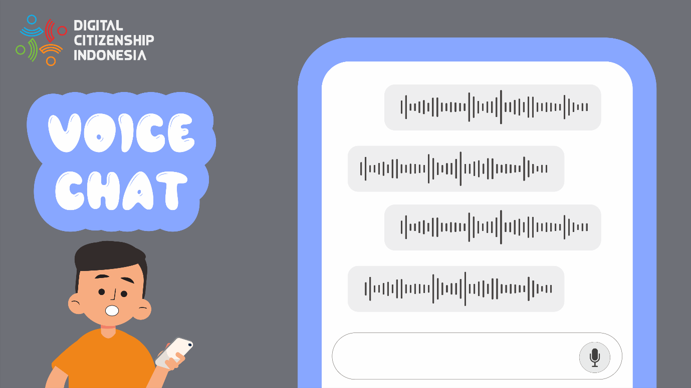

Fitur Interaksi Online agar Tetap Saling Terhubung
Komunikasi online yang kita gunakan saat ini membantu kita untuk tetap terhubung dengan keluarga, teman, dan kolega secara lebih mudah. Sesuai prinsipnya, internet yang terus berkembang dengan inovasi-inovasi media komunikasi
online terbarunya, memang dirancang untuk memudahkan kita bertukar informasi dengan orang lain tanpa mengenal waktu dan jarak, sehingga kita tetap bisa saling terhubung, entah hanya sekadar membentuk jaringan pertemanan baru,
berbagi kisah kehidupan atau bahkan bekerja sama.
Pengguna media komunikasi online memanfaatkan perkembangan teknologi untuk mengirim dan berbagi sesuatu yang lebih dari sekadar pesan teks sederhana. Hari ini, terus bermunculan aplikasi dan jejaring sosial baru yang
menyediakan begitu banyak fitur komunikasi online yang tidak lagi hanya berupa pesan teks sederhana. Beberapa fitur komunikasi online yang menyenangkan seperti video chat, voice chat, dan online group bisa menjadi pilihan lain
cara kita terhubung di dunia maya dengan lebih mudah dan menyenangkan.
Fitur komunikasi yang satu ini menjadi fitur inti dari sebagian besar aplikasi perpesanan dan jejaring sosial saat ini. Video chat memungkinkan penggunanya untuk menonton video bersama, berbagi layar, dan yang paling penting ialah video chat bisa menyampaikan feel atau rasa dalam sebuah obrolan melalui ekspresi dan mimik wajah, walau pun hanya berkomunikasi secara online. Juga, video chat kini dilengkapi dengan pilihan filter dan emoji yang bervariasi.
Obrolan melalui video ini menyediakan wadah bagi penggunanya untuk :
- Menyampaikan humor dan emosi melalui ekspresi dan gerakan wajah.
- Mengembangkan keterampilan sosial dalam berkomunikasi dan menjaga hubungan, bahkan dalam jarak jauh.
- Saling berbagi kegiatan, pengalaman, dan ketertarikan satu sama lain.

Sesuai namanya, fitur komunikasi online ini berbasis pada suara. Berbeda dengan pesan teks, voice chat memberi kita keleluasaan untuk mengirim pesan yang maknanya akan lebih tersampaikan ke lawan bicara, karena minimnya
peluang salah pemaknaan seperti yang sering terjadi ketika membaca pesan teks sarkasme namun disalah artikan.
Fitur voice chat biasanya paling sering digunakan oleh kalangan gamer untuk berkomunikasi dengan rekan satu tim saat game sedang berlangsung. Dalam dunia gamer, voice chat digunakan untuk mengatur strategi, bekerja sama dan
mengembangkan keterampilan kolaboratif pemainnya.
Voice chat juga bisa digunakan untuk membentuk suatu forum obrolan dengan topik diskusi yang disesuaikan dengan minat penggunanya. Baru-baru ini dunia komunikasi online berbasis suara kedatangan pendatang anyar Clubhouse.
Dilansir dari suara.com, Clubhouse adalah aplikasi media sosial yang berbasis obrolan suara. Berbeda dengan aplikasi yang berbasis teks, Clubhouse lebih difokuskan pada konten audio untuk berinteraksi. Uniknya, aplikasi ini
merupakan aplikasi untuk mendengarkan obrolan, wawancara, atau diskusi mengenai berbagai topik secara live. Jadi kita bisa secara langsung mendengarkan siaran yang tengah dilakukan oleh penyelenggara.
Selain menjadi alat komunikasi, online group dapat membantu kita untuk terhubung dengan orang lain atau komunitas tertentu yang sesuai dengan minat kita. Melalui online group ini akan dihasilkan sebuah diskusi yang justru tidak jarang menggunakan kedua fitur video chat atau voice chat. Dalam masa pandemi Covid-19 saat ini, online group berperan sebagai media diskusi dan belajar bersama yang menyenangkan meski pun tidak face to face, karena fitur komunikasi online ini memberi kita kesempatan untuk terhubung dengan orang lain dengan minat yang sama, memperluas wawasan, dan membantu kita untuk mengakses ruang yang aman dan komunitas yang mendukung.